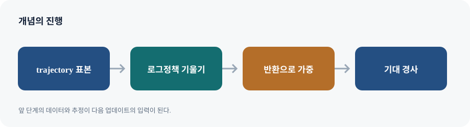

정책경사는 행동을 직접 고르는 정책 \(\pi_\theta(a\mid s)\)의 기대 성능 \(J(\theta)=\mathbb E_{\tau\sim\pi_\theta}[R(\tau)]\)을 미분한다. trajectory 확률에는 환경 전이도 포함되지만, 환경 미분이 불가능해도 score-function identity로 정책 매개변수에 대한 gradient를 얻는다.
따라서 \(\nabla J=\mathbb E[\nabla\log p_\theta(\tau)R(\tau)]\)다. trajectory 확률을 초기상태·정책·환경전이의 곱으로 분해하면 정책에 의존하는 항만 남아 \(\sum_t\nabla\log\pi_\theta(a_t\mid s_t)\)가 된다. 이는 score-function estimator 또는 likelihood-ratio estimator다. 환경의 미분이 필요 없다는 장점이 있지만 반환 전체가 각 행동의 점수에 곱해져 분산이 크다.
REINFORCE는 이 기대값을 실제 궤적 표본의 평균으로 근사해 경사 상승한다. Monte Carlo 반환은 편향이 작지만 분산이 크고, 업데이트 후에는 새 정책의 데이터를 다시 모아야 하는 on-policy 방법이다. 표본 수를 늘리면 독립 표본 가정 아래 평균 추정량의 표준오차는 대략 \(1/\sqrt N\)으로 줄지만 환경 상호작용 비용이 든다.
표지에서 이 강의의 주제를 확인하고, 뒤따르는 예시가 어떤 의사결정 문제를 설명하는지 질문을 세워 둡니다.
MDP 복습과 정책 목표
정책경사는 정책 매개변수를 직접 바꾸는 policy-based 방법이다. 목적은 단일 행동 라벨의 정확도가 아니라 정책이 환경에서 얻는 기대 반환이다. 상태·행동이 확률적이고 trajectory가 정책에 의해 선택된다는 점이 일반 지도학습의 고정 입력 분포와 다르다.
02-2 / 02
Plan for today
슬라이드 02
오늘의 목차는 개념의 순서를 보여 줍니다. 각 항목을 읽을 때 앞에서 배운 도구가 다음 알고리즘의 어떤 약점을 해결하는지 연결합니다.
02-2 / 03
Basic terminologies
슬라이드 03
이 슬라이드의 Basic terminologies를 MDP 복습과 정책 목표 맥락에서 읽는다. 그림의 입력·행동·결과를 구분하고, 식이 있다면 각 항이 어떤 가정과 학습 신호를 나타내는지 설명과 대조한다.
02-2 / 04
Reinforcement learning
슬라이드 04
표본 trajectory의 return으로 score function을 가중합니다. 기대값 수준에서는 맞는 경사지만, 한 표본의 반환이 모든 시간 행동에 곱해지는 분산 문제가 남습니다.
02-2 / 05
Reinforcement learning
슬라이드 05
표본 trajectory의 return으로 score function을 가중합니다. 기대값 수준에서는 맞는 경사지만, 한 표본의 반환이 모든 시간 행동에 곱해지는 분산 문제가 남습니다.

Policy gradient와 REINFORCE의 핵심 구조
02-2 / 06
Plan for today
슬라이드 06
오늘의 목차는 개념의 순서를 보여 줍니다. 각 항목을 읽을 때 앞에서 배운 도구가 다음 알고리즘의 어떤 약점을 해결하는지 연결합니다.
02-2 / 07
Solve RL problems like SL problems?
슬라이드 07
이 슬라이드의 Solve RL problems like SL problems?를 로그미분 유도 맥락에서 읽는다. 그림의 입력·행동·결과를 구분하고, 식이 있다면 각 항이 어떤 가정과 학습 신호를 나타내는지 설명과 대조한다.
로그미분 유도
분포를 미분하는 대신 \(\nabla p=p\nabla\log p\)를 이용해 점수함수와 보상의 곱의 기댓값으로 바꾼다. 식의 순서를 따라 적분 → 미분 → 로그미분 항등식 → 표본 평균을 확인한다. 보상은 gradient를 만든다기보다 좋은 trajectory에 더 큰 가중치를 부여한다.
02-2 / 08
Solve RL problems like SL problems?
슬라이드 08
이 슬라이드의 Solve RL problems like SL problems?를 로그미분 유도 맥락에서 읽는다. 그림의 입력·행동·결과를 구분하고, 식이 있다면 각 항이 어떤 가정과 학습 신호를 나타내는지 설명과 대조한다.
02-2 / 09
Direct policy differentiation
슬라이드 09
기대 return을 궤적 확률에 대한 적분으로 쓴 뒤, 확률밀도의 미분을 로그확률의 기울기로 바꿉니다. 환경 전이를 미분할 필요가 없다는 것이 이 전개의 결과입니다.
확률밀도를 미분하는 대신 로그확률을 쓰면 왜 유용한가?
∇θpθ(τ)=pθ(τ)∇θlogpθ(τ)라는 로그미분 항등식으로 trajectory 확률의 미분을 정책 로그확률의 합으로 바꾼다. 따라서 환경 전이 모델을 미분하지 않고도 표본으로 기대 보상의 기울기를 추정할 수 있다.
02-2 / 10
Direct policy differentiation
슬라이드 10
기대 return을 궤적 확률에 대한 적분으로 쓴 뒤, 확률밀도의 미분을 로그확률의 기울기로 바꿉니다. 환경 전이를 미분할 필요가 없다는 것이 이 전개의 결과입니다.
02-2 / 11
Policy gradient
슬라이드 11
이 슬라이드의 Policy gradient를 REINFORCE 추정량 맥락에서 읽는다. 그림의 입력·행동·결과를 구분하고, 식이 있다면 각 항이 어떤 가정과 학습 신호를 나타내는지 설명과 대조한다.
REINFORCE 추정량
trajectory 로그확률은 시간별 정책 로그확률의 합이다. 따라서 한 궤적의 return으로 모든 행동의 점수함수를 가중한다. 보상을 최대화하므로 gradient ascent를 쓰며, 손실 최소화 프레임워크에 넣을 때는 부호를 바꾸어 음의 목적함수를 최소화한다.
02-2 / 12
REINFORCE
슬라이드 12
표본 trajectory의 return으로 score function을 가중합니다. 기대값 수준에서는 맞는 경사지만, 한 표본의 반환이 모든 시간 행동에 곱해지는 분산 문제가 남습니다.
02-2 / 13
Summary of policy gradients
슬라이드 13
요약의 항목을 정의·목적함수·데이터 요구량·주요 실패 원인으로 나누어 정리합니다. 이름이 비슷한 알고리즘의 차이는 이 네 축에서 드러납니다.
02-2 / 14
Summary of policy gradients
슬라이드 14
요약의 항목을 정의·목적함수·데이터 요구량·주요 실패 원인으로 나누어 정리합니다. 이름이 비슷한 알고리즘의 차이는 이 네 축에서 드러납니다.
02-2 / 15
Policy gradient methods
슬라이드 15
이 슬라이드의 Policy gradient methods를 분산과 표본 수 맥락에서 읽는다. 그림의 입력·행동·결과를 구분하고, 식이 있다면 각 항이 어떤 가정과 학습 신호를 나타내는지 설명과 대조한다.
분산과 표본 수
gradient estimator가 unbiased여도 한 업데이트의 방향은 매우 noisy할 수 있다. 표본 수 증가는 분산을 낮추지만 시뮬레이터 호출 수를 늘린다. reward-to-go, baseline, 가치함수와 advantage는 같은 기대 gradient를 더 효율적으로 추정하려는 다음 강의의 도구다.
02-2 / 16
Why variance matters in policy gradient?
슬라이드 16
분산이 크면 같은 데이터에서도 업데이트 방향이 크게 달라집니다. 학습률만 낮추면 불안정성이 줄 수 있지만, 같은 성능에 더 많은 상호작용이 필요해질 수 있습니다.
02-2 / 17
How to reduce variance of policy gradient?
슬라이드 17
분산이 크면 같은 데이터에서도 업데이트 방향이 크게 달라집니다. 학습률만 낮추면 불안정성이 줄 수 있지만, 같은 성능에 더 많은 상호작용이 필요해질 수 있습니다.
02-2 / 18
Solution 1: Use very large N
슬라이드 18
독립 궤적 평균의 표준오차는 대략 표본 수의 제곱근에 반비례합니다. 표본 효율을 높이는 방법과 상호작용 수를 늘리는 방법을 구분합니다.
02-2 / 19
Solution #2: Use low-variance estimator
슬라이드 19
분산이 크면 같은 데이터에서도 업데이트 방향이 크게 달라집니다. 학습률만 낮추면 불안정성이 줄 수 있지만, 같은 성능에 더 많은 상호작용이 필요해질 수 있습니다.
02-2 / 20
Next class
슬라이드 20
이 페이지는 이번 강의의 경계를 정리합니다. 마지막 개념이 다음 단원의 첫 질문으로 어떻게 이어지는지 한 문장으로 요약해 보세요.
다음 연결
직접 정책을 최적화하는 것만으로는 데이터 재사용과 낮은 분산이 해결되지 않는다. 다음 단계에서는 정책의 점수에 곱할 신호를 반환에서 가치함수·advantage로 바꾸어 어느 행동이 기준보다 나았는지 추정한다.